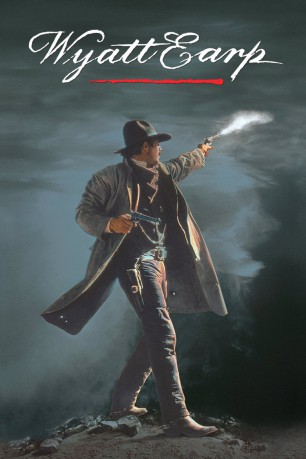

#588 Wyatt Earp - Das Leben einer Legende
Alternativ: Wyatt Earp
Auszeichnungen: für 1 Oscars nominiert
 
 IMDB-Wertung: 6.7 / 10
IMDB-Wertung: 6.7 / 10  Metascore: 47
Metascore: 47 
Von der strengen Hand des Vaters wird Wyatt Earp zum gottesfürchtigen und rechtschaffenen Mann erzogen, für den die Familie der zentrale Lebensinhalt ist. Als seine erste Frau während ihrer Schwangerschaft an Typhus stirbt, ergibt sich Wyatt dem Alkohol und schlägt sich als Büffeljäger durch. Nachdem er diese Lebenskrise mit Mühe gemeistert hat, wird er zum Sheriff gewählt und sorgt, gemeinsam mit seinen Brüdern und Doc Holliday, mit eiserner Hand für Gesetz und Ordnung - und wird nebenbei als Glücksspieler zum reichen Mann.
Jahr: 1994
Dauer: 191 Minuten
FSK: 12
Land: USA Studio: Warner Bros.Tonspuren:
Untertitel:
Auflösung: 1080p (1920x800) Größe: 14848 MB
Genre: Abenteuer, Biographie, Krimi, Drama, Western
Regisseur:  Lawrence Kasdan
Lawrence Kasdan
Drehbuch: Dan Gordon, Lawrence Kasdan
Soundtrack: James Newton Howard
Darsteller:
Datei: X:\HD-Western-1980-1999\Wyatt Earp - Das Leben einer Legende (1994, FSK12, 1920x800).mkv seit 11.03.2015
Festplatte: HD Eastern+Western
 Es gibt insgesamt 29 Filme in der Gruppe 'HD-Western-1980-1999'
Es gibt insgesamt 29 Filme in der Gruppe 'HD-Western-1980-1999'